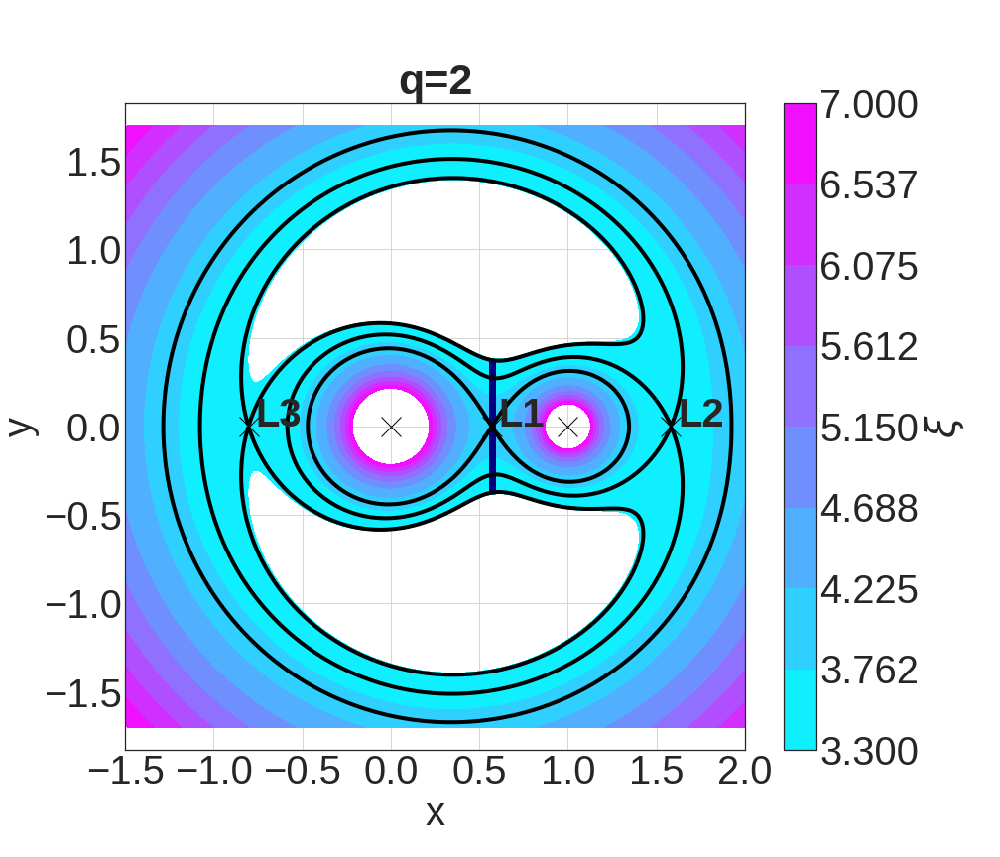
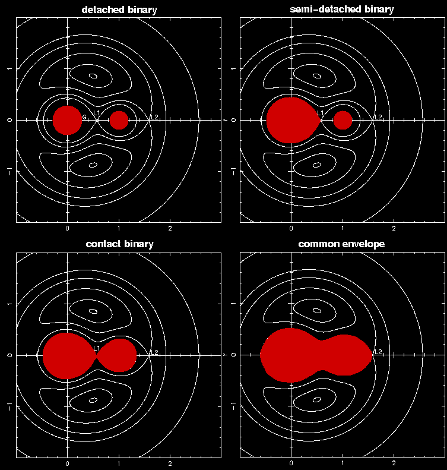
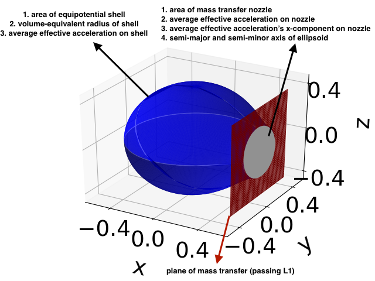
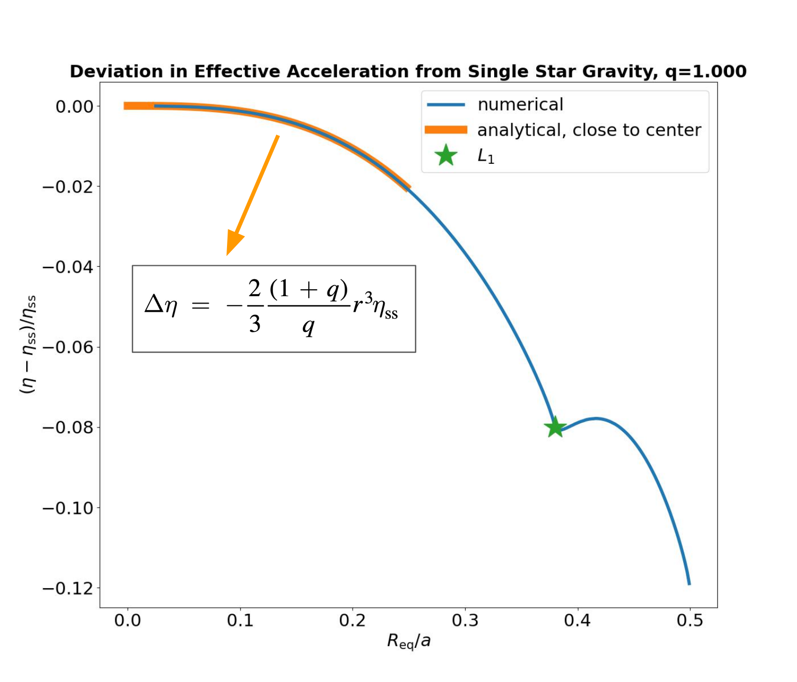
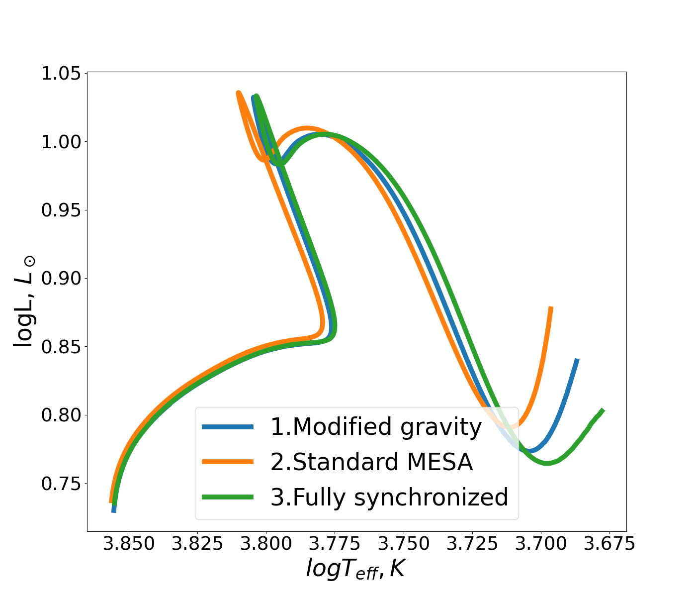

The Deformed Gravitational Fields of Binary Stars
It has been established that most high mass stars and a notable fraction of low mass stars have companions, which makes the study of binary stars one of the biggest branches of stellar evolution. Despite all of this, many uncertainties remain in understanding the evolution of these systems due to the additional physical effects introduced to them due to binarity.My master's thesis was specifically focused on answering a specific question on the evolution of binary stars: does the deformed gravitational field of binary stars alter the evolution of binary stars or not?
The gravitational field of single stars is spherically symmetric and can easily be incorporated into one-dimensional stellar evolution codes. But the layers of material in a binary star feel gravitational effects from the companion star and the centrifugal forces as well, which is visualized in the deformed binary potential shapes that can be seen in the figure below.

The spherical symmetry is an approximation which may hold whilst the star isn't big enough compared to its Roche Lobe, but when it is close to mass transfer and after that, one can expect a non-negligible deviation from the gravitational field of a single star (credit for image below here ). 
This motivated us to create a numerical code that calculates the properties of binary stars averaged in 1D in order to be applicable to use in one-dimensional stellar evolution codes. Quantities such as the average gravitational acceleration, the volume equivalent radius, have been calculated. Additionally, we have calculated properties that can be used in mass transfer calculations such as the area of the ellipsoid nozzle on the L1 plane which mass transfer occurs, and the average effective acceleration on this area. All of these quantities are available on my github here and have been calculated for a wide range of mass ratios for public use.

One of my favorite moments in this topic was when I found a simple equation to estimate the gravitational acceleration in binary stars in 1D, which agree very well with the numerical calculations as can be seen in the figure below.

We have used these tables by now to estimate how much the evolution of the donor star gets impacted with this up to mass transfer ignition (see figure below for how the evolutionary tracks get deviated compared to a single star with the same initial conditions; made with MESA), and how much would using these tables change the mass transfer rates computed using traditional mass transfer prescriptions. You can read more about my project and its scientific outcomes in the two papers published about it here and here, and in my thesis.
